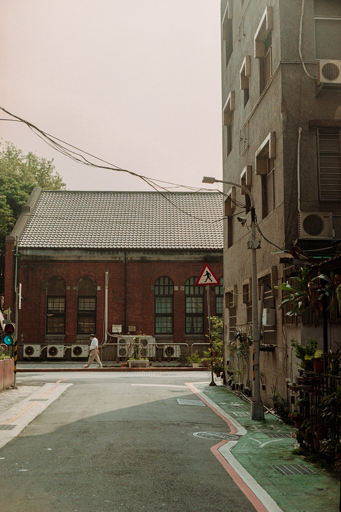

|
Selections from《Bliss》, 洪德程 @steven_angtc “What I’m photographing, it is a hard question to answer. And the best I’ve come up up is ‘life today.’ I don’t know whether they believe me or not, or what that means.” - William Eggleston 在我把自己丟入攝影的世界以來， 便一直在為自己的作品尋找主題。 「想傳達什麼？」，「想針對什麼？」， 似乎要賦予意義，一個作品才會有生命。 這一直困擾著我。 但William Eggleston的這一句話， 似乎就是我一直需要的認同。 每天拼了命地活著， 忙著替自己的人生填上意義， 尋求認同，追尋成就， 這個框架已經侷限了我。 所以至少在攝影上， 我想要能夠單純的留下這些片刻。 只希望， 看到這些片刻的你， 能夠體驗到， 我那個當下感動的瞬間， 那個你沒體驗到的瞬間的機會。 view on instagram |